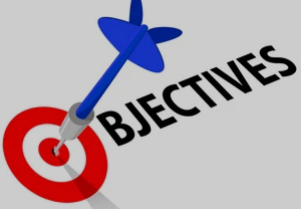
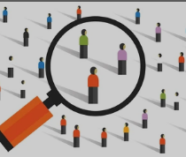

Proposal and Research
Research Preliminaries
-
Research topic
Research topic is the integral part of the research paper. Choosing the right topic will help the researcher to navigate the journey with a lot of ease. The other side is dark.
-
Research abstract
Research abstract is the snapshot of the whole paper. It briefly inform the reader what to expect. Writing well organized research abstract equally shows how good the content is.
Research Chapter one
-
Background of Study
The background explains to the reader where your research journey started, why you got interested in the topic. That means that you first establish the context of the research you did with a general overview of the field or topic and then present the key issues that drove your decision to study the specific problem you chose.
-

Statement of problem
A statement of the problem is used in research work as a claim that outlines the problem addressed by a study. The statement of the problem briefly addresses the question: What is the problem that the research will address?
-

Objectives and research questions
Objectives can help you stay focused and steer your research in the required direction. They help define and limit the scope of your research, which is important to efficiently manage your resources and time. The objectives help to create and maintain the overall structure, and specify two main things—the variables and the methods of quantifying the variables.
-

Scope of the study
The scope of a study explains the extent to which the research area will be explored in the work and specifies the parameters within the study will be operating. it defines what the study is going to cover and what it is focusing on. Similarly, you also have to define what the study is not going to cover. This will come under the limitations. Generally, the scope of a research paper is followed by its limitations.
-

Conceptual framework
A conceptual framework is a representation of the relationship you expect to see between your variables, or the characteristics or properties that you want to study. It can be written or visual and are generally developed based on a literature review of existing studies about your topic.
Research Chapter two
-

Literature Review
A literature review is a survey of scholarly sources on a specific topic. It provides an overview of current knowledge, allowing you to identify relevant theories, methods, and gaps in the existing research that you can later apply to your paper, thesis, or dissertation topic.
-
Theoretical framework
A theoretical framework provides the theoretical assumptions for the larger context of a study, and is the foundation or ‘lens’ by which a study is developed. This framework helps to ground the research focus understudy within theoretical underpinnings and to frame the inquiry for data analysis and interpretation.
Research Chapter 3
-

Sampling procedure
Sampling is a process or technique of choosing a sub-group from a population to participate in the study; it is the process of selecting a number of individuals for a study in such a way that the individuals selected represent the large group from which they were selected (Ogula, 2005). There are two major sampling procedures in research. These include probability and non probability sampling.
-

Sample size determination
Sample size determination is the process of choosing the right number of observations or people from a larger group to use in a sample. The goal of figuring out the sample size is to ensure that the sample is big enough to give statistically valid results and accurate estimates of population parameters but small enough to be manageable and cost-effective.
-

Validity and reliability
Validity and reliability are two incredibly important concepts in research, especially within the social sciences. Both validity and reliability have to do with the measurement of variables and/or constructs. When undertaking research, you’ll often want to measure constructs and variables and, at the simplest level, validity and reliability are about ensuring the quality and accuracy of those measurements.
-

Data analysis techniques
There are two major types of data analysis methods that are used in research: qualitative analysis, which is characteristics-focused, and quantitative analysis, which is numbers-focused. Within these types are multiple subcategories, such as text analysis, statistical analysis, diagnostic analysis, and predictive analysis.
-

Ethical considerations
To conduct responsible research, you’ve got to think about ethics. They protect participants’ rights and their well-being - and they ensure your findings are valid and reliable. This isn’t just a box for you to tick. It’s a crucial consideration that can make all the difference to the outcome of your research.
Appendixes
-
Data collection tools design
Data collection is the process of collecting and evaluating information or data from multiple sources to find answers to research problems, answer questions, evaluate outcomes, and forecast trends and probabilities. It is an essential phase in all types of research, analysis, and decision-making, including that done in the social sciences, business, and healthcare.
-
Referencing
Every scientific paper builds on previous research – even if it’s in a new field, related studies will have preceded and informed it. In peer-reviewed articles, authors must give credit to this previous research, through citations and references. Not only does this show clearly where the current research came from, but it also helps readers understand the content of the paper better.
-

Document formating
Writing a research paper can be daunting if you’re not experienced with the process. Getting the proper format is one of the most challenging aspects of the task. Reviewers will immediately dismiss a paper that doesn't comply with standard formatting, regardless of the valuable content it contains.
-

Plagiarism report
Plagiarism is defined as representing a part of or the entirety of someone else's work as your own. Whether published or unpublished, this could be ideas, text verbatim, infographics, etc. It is no different in the academic writing, either. However, it is not considered plagiarism if most of your work is original and the referred part is diligently cited.
Data Analysis and Interpretation
-
Data dictionary, coding, data entry and cleaning
Data cleaning is the process of fixing or removing incorrect, corrupted, incorrectly formatted, duplicate, or incomplete data within a dataset. When combining multiple data sources, there are many opportunities for data to be duplicated or mislabeled. If data is incorrect, outcomes and algorithms are unreliable, even though they may look correct.
-
Exploratory/ descriptive analysis only
Exploratory Data Analysis refers to the critical process of performing initial investigations on data so as to discover patterns,to spot anomalies,to test hypothesis and to check assumptions with the help of summary statistics and graphical representations.
-
Inferential analysis only
Inferential statistics are often used to compare the differences between the treatment groups. Inferential statistics use measurements from the sample of subjects in the experiment to compare the treatment groups and make generalizations about the larger population of subjects.
-
Data visualization only
Data visualization is the graphical representation of information and data. By using visual elements like charts, graphs, and maps, data visualization tools provide an accessible way to see and understand trends, outliers, and patterns in data. Additionally, it provides an excellent way for employees or business owners to present data to non-technical audiences without confusion.
-

Report writing in APA style
The APA (American Psychological Association) style format is the preferred citation style for social science research papers. APA is frequently used in the fields of economics, criminology, political science, sociology, business, and pedagogy. APA provides specific guidelines for nearly all aspects of manuscript formatting, from font choice to margins and punctuation.
Further Support
-

Slides for presentation
Have you ever had to create a research presentation? If yes, you know how difficult it is to prepare an effective presentation that perfectly explains your research. Since it's a visual representation of your papers, a large chunk of its preparation goes into designing. We've developed a practical, step-by-step guide to help you prepare a stellar research presentation.
-

Mock presentation
Mock Presentation is an informal event designed to better prepare you for your Final Presentation. In these sessions, you will present a few of your slides (about 10-15 minutes), and get feedback from the our staff as well as a few invited research supervisors. You will also be able to see a few of your peers' Mock Presentations, as there are up to 4 teams per time slot.